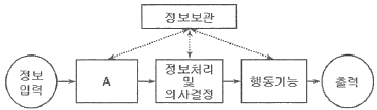
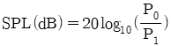
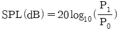
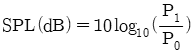
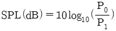
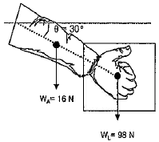
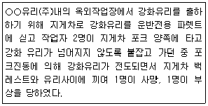

인간공학기사 (2015-03-08 기출문제)
1과목: 인간공학개론
1. 다음 중 은행이나 관공서의 접수창구의 높이를 설계하는 기준으로 가장 적절한 것은?
- 조절범위의 원칙
- 최소집단치를 위한 원칙
- 최대집단치를 위한 원칙
- 평균치를 위한 원칙
(정답률: 84%)

2. 검은 상자 안에 붉은 공, 검은 공, 그리고 흰 공이 있다. 각 공의 추출 확률은 붉은 공 0.25, 검은 공 0.125, 그리고 흰 공 0.5이다. 추출될 공의 색을 예측하는데 필요한 평균 정보량(bit)은 약 얼마인가?
- 0.875
- 1.375
- 1.5
- 1.75
(정답률: 58%)
3. 체계분석 시에 인간공학으로부터 얻는 보상 및 가치와 거리가 가장 먼 것은?
- 인력 이용률 향상
- 사고 및 오용으로 부터의 손실감소
- 기계 및 설비 활용의 감소
- 생산 및 보전의 경제성 증대
(정답률: 76%)
4. 다음 중 시력의 척도와 그에 대한 설명으로 틀린 것은?
- Vernier 시력-한 선과 다른 선의 측방향 변위(미세한 치우침)를 식별하는 능력
- 최소 가분 시력-대비가 다른 두 배경의 접점을 식별하는 능력
- 최소 인식 시력-배경으로부터 한 점을 식별하는 능력
- 입체 시력-깊이가 있는 하나의 물체에 대해 두 눈의 망막에서 수용할 때 상이나 그림의 차이를 분간하는 능력
(정답률: 69%)
5. 다음 중 전문가에 의한 사용성 평가방법은?
- 표적집단면접법(Focus Group Interview)
- 사용자테스트(User Test)
- 휴리스틱 평가(Heuristic Evaluation)
- 설문조사(Questionnaire Survey)
(정답률: 83%)
6. 다음 중 인간이 기계를 능가하는 기능에 해당하는 것은?
- 암호화된 정보를 신속하게 대향으로 보관한다.
- 완전히 새로운 해결책을 찾아낸다.
- 입력신호에 대해 신속하고 일관성 있게 반응한다.
- 주위가 소란하여도 효율적으로 작동한다.
(정답률: 92%)
7. 다음 중 정적 인체 측정 자료를 동적 자료로 변환할 때 활용될 수 있는 크로머(Kroemer)의 경험 법칙을 설명한 것으로 틀린 것은?
- 키, 눈, 어깨, 엉덩이 등의 높이는 3% 정도 줄어든다.
- 팔꿈치 높이는 대개 변화가 없지만, 작업 중 5% 까지 증가하는 경우가 있다.
- 앉은 무릎높이 또는 오금 높이는 굽 높은 구두룰 신지 않는 한 변화가 없다.
- 전방 및 측방 팔길이는 편안한 자세에서 30%정도 늘어나고, 어깨와 몸통을 심하게 돌리면 20% 정도 감소한다.
(정답률: 69%)
8. 회전운동을 하는 조종장치의 레버를 60° 움직였을 때 표시장치의 커서는 10cm 이동하였다. 레버의 길이가 10cm일 때 이 조종장치의 C/R비는 약 얼마인가?
- 1.⑤
- 1.51
- 5.42
- 8.33
(정답률: 75%)
9. 실험연구에서 실험자가 연구하고 싶은 대상이 되는 변수를 무엇이라 하는가?
- 종속 변수
- 독립 변수
- 통제 변수
- 환경 변수
(정답률: 77%)
10. 다음 중 신호검출이론에서 판정기준(criterion)이 오른쪽으로 이동할 때 나타나는 현상으로 옳은 것은?
- 허위경보(false alarm)가 줄어든다.
- 신호(signal)의 수가 증가한다.
- 소음(noise)의 분포가 커진다.
- 적중, 확률(실제 신호를 신호로 판단)이 높아진다.
(정답률: 67%)
11. 다음 중 눈의 구조에 관한 설명으로 옳은 것은?
- 망막은 카메라의 필름처럼 상이 맺혀지는 곳이다.
- 수정체는 눈에 들어오는 빛의 양을 조절한다.
- 동공은 홍채의 중심에 있는 부위로 시신경세포가 분포한다.
- 각막은 카메라의 렌즈와 같은 역할을 한다.
(정답률: 70%)
12. 그림은 인간-기계 통합 체계의 인간 또는 기계에 의해서 수행되는 기본 기능의 유형이다. 다음 중 그림의 A부분에 가장 적합한 내용은?

- 통신
- 확인
- 감지
- 신체제어
(정답률: 92%)
13. 다음 중 웨버(Weber)의 법칙을 따를 때 자극 감지 능력이 가장 뛰어난 것은?
- 미각
- 청각
- 무게
- 후각
(정답률: 49%)
14. 다음 중 정량적인 동적 표시 장치에 대한 설명으로 옳은 것은?
- 표시장치 설계시 끝이 둥근 지침이 권장된다.
- 계수형 표시장치는 자동차 속도계에 적합하다.
- 동침(動針)형 표시장치는 인식적 암시 신호를 나타내는데 적합하다.
- 눈금이 고정되고 지침이 움직이는 표시장치를 동목형 표시장치라 한다.
(정답률: 54%)
15. 다음 중 음압수준(SPL)을 나타내는 공식으로 옳은 것은? (단, P0는 기준 음압, P1은 측정하고 하는 음압이다.)




(정답률: 83%)
16. 앉아서 작업하는 사람의 작업공간 설계 시 고려하여야 할 사항과 거리가 먼 것은?
- 작업공간 포락면은 팔을 뻗는 방향에 영향을 받는다.
- 실행하는 수작업의 성질에 따라 작업공간 포락면의 경계가 달라진다.
- 작업복장은 작업공간 포락면에 영향을 미친다.
- 신체 평형에 영향을 미치는 인자가 작업공간 포락면에 영향을 미친다.
(정답률: 49%)
17. 다음 중 정보 이론(information theory)에 관한 설명으로 옳은 것은?
- 정보를 정량적으로 측정할 수 있다.
- 정보의 기본 단위는 바이트(byte)이다.
- 확실한 사건의 출현에는 많은 정보가 담겨있다.
- 정보란 불확실성의 증가(addition of uncertainty)라 정의한다.
(정답률: 66%)
18. 인체의 감각기능 중 후각에 대한 설명으로 옳은 것은?
- 후각에 대한 순응은 느린 편이다.
- 후각은 훈련을 통해 식별능력을 가르지 못한다.
- 후각은 냄새 존재 여부보다 특정 자극을 식별하는데 효과적이다.
- 특정 냄새의 절대 식별 능력은 떨어지나 상대적 비교 능력은 우수한 편이다.
(정답률: 85%)
19. 다음 중 외이와 중이의 경계가 되는 것은?
- 기저막
- 고막
- 정원창
- 난원창
(정답률: 85%)
20. 다음 중 정보처리과정에서 정보 전달의 신뢰성을 높이기 위한 설계 방법으로 가장 적당한 것은?
- 시배분을 이용한다.
- 자극의 차원을 줄인다.
- 상대식별보다 절대식별을 이용한다.
- 청킹(chunking)을 이용한다.
(정답률: 61%)
2과목: 작업생리학
21. 트레드밀(treadmill) 위를 5분간 걷게 하여 배기를 더글라스 백(douglas bag)을 이용하여 수집하고 가스분석기로 조사한 결과 배기량이 75L, 산소가 16%, 이산화탄소(CO2)가 4%이었다. 이 피험자의 분당 산소소비량(L/min)과 에너지가(價, kcal/min)는 각각 얼마인가? (단, 흡기시 공기 중의 산소는 21%, 질소는 79%이다.)
- 산소소비량:0.7377. 에너지가:3.69
- 산소소비량:0.7899. 에너지가:3.95
- 산소소비량:1.3088. 에너지가:6.54
- 산소소비량:1.3988. 에너지가:6.99
(정답률: 49%)
22. 다음 중 신체 동작의 유형에 있어 허리를 굽혀 몸의 앞쪽으로 숙이는 동작과 가장 관련이 깊은 것은?
- 굴곡(flexion)
- 신전(extension)
- 회전(rotation)
- 외전(radial deviation)
(정답률: 76%)
23. 다음 중 소음관리 대책의 단계로 가장 적절한 것은?
- 소음원의 제거→개인보호구 착용→소음수준의 저감→소음의 차단
- 개인보호구 착용→소음원이 제거→소음수준의 저감→소음의 차단
- 소음원의 제거→소음의 차단→소음수준의 저감→개인보호구 착용
- 소음의 차단→소음원의 제거→조음수준의 저감→개인보호구 착용
(정답률: 81%)
24. 그림과 같이 작업자가 한 손을 사용하여 무게(WL)가 98N인 작업물을 수평선을 기준으로 30도 팔꿈치 각도로 들고 있다. 물체를 쥔 손에서 팔꿈치까지의 거리는 0.35m이고, 손과 아래팔의 무게(WA)는 16N이며, 손과 아래팔의 무게중심은 팔꿈치로부터 0.17m에 위치해 있다. 팔꿈치에 작용하는 모멘트는 얼마인가?

- 32Nm
- 37Nm
- 42Nm
- 47Nm
(정답률: 46%)
25. 다음 중 근육의 생리적 스트레인 측정시 대상 근육에 표면 전극을 부착하여 근수축시 발생하는 전기적 활성도를 기록하는 방법은?
- EEG(electroencephalogram)
- ECG(electrocardiogram)
- EOG(electrooculogram)
- EMG(electromyogram)
(정답률: 83%)
26. 다음 중 신경계에 대한 설명으로 틀린 것은?
- 체신경계는 평활근, 심장근에 분포한다.
- 기능적으로는 체신경계와 자율신경계로 나눌 수 있다.
- 자율신경계는 교감신경계와 부교감신경계로 세분된다.
- 신경계는 구조적으로 중추신경계와 말초신경계로 나눌 수 있다.
(정답률: 60%)
27. 다음 중 근력에 대한 설명으로 틀린 것은?
- 훈련(운동)을 통해 근력을 증가시킬 수 있다.
- 동적근력은 등척력이라 하며, 정적근력보다 측정하기 어렵다.
- 근력은 보통 25~35세에 최고에 도달하고, 40세 이후 서서히 감소한다.
- 정적근력은 신체부위를 움직이지 않으면서 물체에 힘을 가할 때 발생한다.
(정답률: 76%)
28. 다음 중 진동 공구(power hand tool)의 사용으로 인한 부하를 줄이기 위한 방법으로 적절하지 않은 것은?
- 진동 공구를 정기적으로 보수한다.
- 진동을 흡수할 수 있는 재질의 손잡이를 사용한다.
- 진동에 접촉되는 신체 부위의 면적을 감소시킨다.
- 신체에 전달되는 진동의 크기를 줄이도록 큰 힘을 사용한다.
(정답률: 77%)
29. 소리 크기의 지표로서 사용하는 단위에 있어서 8sone은 몇 phon인가?
- 60
- 70
- 80
- 90
(정답률: 55%)
30. 일반적으로 1L의 산소(O2)는 몇 kcal 정도의 에너지를 생성할 수 있는가?
- 1
- 2.5
- 5
- 10
(정답률: 76%)
31. 다음 중 근육수축 시 근절 내 영역에서 일어나는 현상으로 적합하지 않은 것은?
- A대(band)가 짧아진다.
- I대(band)가 짧아진다.
- H영역(zone)이 짧아진다.
- Z선(line)과 Z선(line)사이가 가까워진다.
(정답률: 55%)
32. 다음 중 작업부하 및 휴식시간 결정에 관한 설명으로 옳은 것은?
- 작업부하는 작업자의 능력과 관계없이 절대적으로 산출된다.
- 정신적인 권태감은 주관적인 요소이므로 휴식시간 산정시 고려할 필요가 없다.
- 친교를 위한 작업자들 간의 대화시간도 휴식시간 산정시 반드시 고려되어야 한다.
- 조명 및 소음과 같은 환경적 요소도 작업부하 및 휴식시간 산정 시 고려해야 한다.
(정답률: 82%)
33. 다음 중 교대작업의 관리방법으로 적절하지 않은 것은?
- 일정하지 않은 연속근무는 피한다.
- 근무 적응을 위하여 야간근무는 4일 이상 연속한다.
- 근무반 교대방향은 아침반→저녁반→야간반으로 정방향 순환이 되게 한다.
- 야간근무 후의 다음 근로시작 시간까지는 48시간 이상의 휴식을 갖는다.
(정답률: 88%)
34. 다음 중 골격의 역할로 옳지 않은 것은?
- 신체 활동의 수행
- 신체 주요 부분의 보호
- 신체의 지지 및 형상
- 운동 명형 정보의 전달
(정답률: 82%)
35. 다음 중 육체적 활동 또는 정신적 활동에 따른 생체의 반응을 설명한 것으로 틀린 것은?
- 부정맥(sinus arrhythmia)이란 심장 활동의 불규칙성의 척도로 일반적으로 정신부하가 증가하면 부정맥점수가 감소한다.
- 점멸융합수파수는 중추신경계의 피로, 즉 정신피로의 척도로 사용될 수 있으며 피곤함에 따라 빈도가 올라간다.
- 근전도는 근육이 피로하기 시작하면 저주차수 범위의 활성이 증가하고 고주파수 범위의 활성이 감소한다.
- 산소소비량(oxygen consumption)을 측정하여 에너지소비량(energy expenditure)을 평가할 수 있는데 육체적 작업 특히 큰 근육의 움직임을 요구하는 동적작업(dynamic work)을 많이 하면 산소소비량이 증가한다.
(정답률: 43%)
36. 다음 중 실내의 면에서 추천반사율이 가장 낮은 곳은?
- 바닥
- 천장
- 가구
- 벽
(정답률: 89%)
37. 체내에서 유기물의 합성 또는 분해에 있어서는 반드시 에너지의 전환이 따르게 되는데 이것을 무엇이라 하는가?
- 산소부채(oxygen debt)
- 근전도(electromyogram)
- 심전도(electrocardiogram)
- 에너지 대사(energy metabolism)
(정답률: 80%)
38. 다음 중 지름이 2.54cm되는 촛불이 수평 방향으로 비칠 때의 빛의 광도를 나타내는 단위는?
- 램버트(lambert)
- 럭스(lux)
- 루멘(lumen)
- 촉광(candle)
(정답률: 66%)
39. 다음 중 순환계의 기능 및 특성에 관한 설명으로 옳은 것은?
- 혈압은 좌심실에서 멀어질수록 높아진다.
- 동맥, 정맥, 모세혈관 중 혈관의 단면적은 모세혈관이 가장 작다.
- 모세혈관 내외의 물질(산소, 이산화탄소 등) 이동은 혈압과 혈장 삼투압의 차이에 의해 이루어진다.
- 체순환(systemic circulation)은 우심실, 폐동맥, 폐포모세혈관, 우심방 순의 경로로 혈액이 흐르는 것을 말한다.
(정답률: 48%)
40. 고열 작업장에서 방열복의 착용은 신체와 환경 사이의 열교환 경로 중 어떠한 경로를 차단하기 위한 것인가?
- 전도(conduction)
- 대류(convection)
- 복사(radiation)
- 증발(evaporation)
(정답률: 59%)
3과목: 산업심리학 및 관계법규
41. 다음 중 휴먼에러로 이러지는 배후의 4요인(4M)에 해당하지 않는 것은?
- Media
- Machine
- Material
- Management
(정답률: 82%)
42. Hick's Law에 따르면 인간의 반응시간은 정보량에 비례한다. 단순반응에 소요되는 시간이 150ms이고, 단위 정보량당 증가되는 반응시간이 200ms이라고 한다면, 2bits의 정보량을 요구하는 작업에서의 예상 반응시간은 몇 ms인가?
- 400
- 500
- 550
- 700
(정답률: 56%)
43. NIOSH의 직무 스트레스 모형에서 직무 스트레스 요인을 크게 작업요인, 조직요인, 환경요인으로 나눌 때 다음 중 환경요인에 해당하는 것은?
- 조명, 소음, 진동
- 가족상황, 교육상태, 결혼상태
- 작업 부하, 작업 속도, 교대 근무
- 역할 갈등, 관리 유형, 고용불확실
(정답률: 77%)
44. 다음 중 민주적 리더십에 관한 설명과 가장 거리가 먼 것은?
- 생산성과 사기가 높게 나타난다.
- 맥그리거의 Y 이론에 근거를 둔다.
- 구성원에게 최대의 자유를 허용한다.
- 모든 정책이 집단 토의나 결정에 의해서 이루어진다.
(정답률: 54%)
45. 레빈(Levin)이 제안한 인간의 행동특성에 관한 설명으로 틀린 것은?
- 인간의 행동은 개인적 특성(P:Person) 및 주어진 환경(E:Environment)과 함수관계가 있다.
- 태도는 인간행동의 표상으로 어떤 자극이나 상황에 대하여 좋고 나쁨을 평가하는 개인의 선호경향이다.
- 개인적 특성(P:Person)은 연령, 심신상태, 성격, 지능 등에 의해 결정된다.
- 주어진 환경(E:Environment)의 주요 대상 중 인적환경은 제외된다.
(정답률: 77%)
46. 다음 중 막스 웨버(Max Weber)에 의해 제시된 관료주의의 특징과 가장 거리가 먼 것은?
- 수직적으로 하부조직에 적절한 권한 위임을 가정한다.
- 조직 구조에 있어 노동의 통합화를 가정한다.
- 법과 규정에 의한 운영으로 예측 가능한 조직운영을 가정한다.
- 하부조직과 인원을 적절한 크기가 되도록 가정한다.
(정답률: 64%)
47. 설문조사에 의해 스트레스 평가법 중에서 주관적인 스트레스 평가방법이 아닌 것은?
- 생활사건 척도법
- Lazarus의 일상 골칙거리 척도법
- 지각된 스트레스 척도법
- DASS(우울분노스트레스 척도법)
(정답률: 58%)
48. 다음 중 안전대책의 중심적인 내용이라 할 수 있는 “3E"에 포함되지 않는 것은?
- Engineering
- Environment
- Education
- Enforcement
(정답률: 79%)
49. 다음 중 부주의에 대한 사고방지 대책으로 적절하지 않는 것은?
- 적성배치
- 작업의 표준화
- 주의력 분산훈련
- 스트레스 해소대책
(정답률: 74%)
50. 다음 중 리더십의 권한에서 부하직원들이 상사를 존경하여 스스로 따른다고 할 때의 상사의 권한을 무엇이라 하는가?
- 합법적 권한
- 강압적 권한
- 보상적 권한
- 위임된 권한
(정답률: 66%)
51. 인간의 실수를 심리학적으로 분류한 스웨인(Swain)의 분류 중에서 필요한 작업이나 절차를 수행하였으나 잘못 수행한 오류에 해당하는 것은?
- omission error
- commission error
- timing error
- sequential error
(정답률: 75%)
52. 신뢰도가 0.85인 작업자가 혼자서 검사하는 공정에 동일한 신뢰도를 가진 요원을 중복으로 지원하여 2인 1조로 검사를 한다면 이 공정에서의 신뢰도는 얼마가 되겠는가? (단, 전체 작업기간 동안 요원은 지원된다.)
- 0.7225
- 0.8500
- 0.9775
- 0.9801
(정답률: 69%)
53. 하인리히는 재해연쇄론에서 재해가 발생하는 과정을 5단계 요인으로 나누어 설명하였다. 그 중 사고를 예방하기 위한 관리 활동들이 가장 효과적으로 적용될 수 있는 단계를 무엇이라고 주장하였는가?
- 개인적 결함
- 사고 그 자체
- 사회적 환경(분위기)
- 불안전 행동 및 불안전 상태
(정답률: 78%)
54. 다음 중 집단구성원들이 서로에게 매력적으로 끌리어 그 집단목표를 효율적으로 달성하는 정도를 무엇이라고 하는가?
- 집단소집성
- 집단응집성
- 집단선호성
- 집단협력성
(정답률: 83%)
55. 다음 중 매슬로우(A.H. Maslow)의 인간욕구 5간계를 올바르게 나열한 것은?
- 생리적 욕구→사회적 욕구→안전 욕구→자아실현의 욕구→존경의 욕구
- 생리적 욕구→안전 욕구→사회적 욕구→자아실현의 욕구→존경의 욕구
- 생리적 욕구→안전 욕구→사회적 욕구→존경의 욕구→자아실현의 욕구
- 생리적 욕구→사회적 욕구→안전 욕구→존경의 욕구→자아실현의 욕구
(정답률: 79%)
56. 다음 중 하인리히(Heinrich) 재해코스트 평가방식에서 “1:4”의 원칙에 관한 설명으로 옳은 것은?
- 간접비용의 정확한 산출이 어려운 경우에는 직접비용의 4배를 간접비용으로 추산한다.
- 직접비용의 정확한 산출이 어려운 경우에는 간접비용의 4개를 직접비용으로 추산한다.
- 인전비용의 정확한 산출이 어려운 경우에는 물적비용의 4배를 인적비용으로 추산한다.
- 물적비용의 정확한 산출이 어려운 경우에는 인적비용의 4배를 물적비용으로 추산한다.
(정답률: 65%)
57. 다음 중 과도로 긴장하거나 감정 흥분시의 의식수준단계로 대외의 활동력은 높지만 냉정함이 결여되어 판단이 둔화되는 의식수준 단계는?
- phaase Ⅰ
- phaase Ⅱ
- phaase Ⅲ
- phaase Ⅳ
(정답률: 78%)
58. 오토바이 판매광고 방송에서 모델이 안전모를 착용하지 않은 채 머플러를 휘날리면서 오토바이를 타는 모습을 보고 따라하다가 머플러가 바퀴에 감겨 사고를 당하였다. 이는 제조물책임법상 어떠한 결함에 해당하는가?
- 표시상의 결함
- 책임상의 결함
- 제조상의 결함
- 설계상의 결함
(정답률: 85%)
59. 다음은 재해의 발생사례이다. 재해의 원인 분석 및 대책으로 적절하지 않은 것은?

- 불안전한 행동-지게차 승차석외의 탑승
- 예방대책-중량물 등의 이동시 안전조치교육
- 재해유형-협착
- 기인물-강화유리
(정답률: 74%)
60. 의사결정나무를 작성하여 재해 사고를 분석하는 방법으로 확률적 분석이 가능하며 문제가 되는 초기사항을 기준으로 확률적 분석이 가능하며 문제가 되는 초기사항을 기준으로 파생되는 결과를 귀납적으로 분석하는 방법은?
- THERP
- ETA
- FTA
- FMEA
(정답률: 51%)
4과목: 근골격계질환 예방을 위한 작업관리
61. 다음 중 근골격계질관 예방을 위한 방안으로 거리가 먼 내용은?
- 어깨 높이 위에서의 작업을 피한다.
- 연약한 피부 조직에 가해지는 압박을 피한다.
- 진동을 줄이기 위한 방진용 장갑 등을 착용한다.
- 운반상자는 무게 중심이 분산 되도록 가능한 깊고 넓게 만든다.
(정답률: 76%)
62. 다음 중 워크 샘플링(Work Sampling)에 관한 설명으로 옳은 것은?
- 반복 작업인 경우 적당하다.
- 표준시간 설정에 이용할 경우 레이팅이 필요 없다.
- 작업자가 의식적으로 행동하는 일이 적어 결과의 신뢰수준이 높다.
- 작업순서를 기록할 수 있어 개개의 작업에 대한 깊은 연구가 가능하다.
(정답률: 57%)
63. 요소작업을 20번 측정한 결과 관측평균시간은 0.20분, 표준편차는 0.08분이었다. 신뢰도 95%, 허용오차 ±5%를 만족시키는 관측횟수는 얼마인가? (단, t(0.025.19)는 2.09이다.)
- 260회
- 270회
- 280회
- 290회
(정답률: 52%)
64. 다음 중 수공구의 개선원리로 적절하지 않은 것은?
- 힘이 요구되는 작업에 대해서는 파워그릴(Power Grip)을 사용한다.
- 손목을 똑바로 펴서 사용할 수 있도록 한다.
- 적합한 모양의 손잡이를 사용하되, 기능하면 접촉면을 좁게 한다.
- 양손 중 어느 손으로도 사용이 가능하고, 대부분의 사람들이 사용할 수 있도록 설계한다.
(정답률: 87%)
65. 다음 중 비효율적인 서어블릭(therblig)에 해당하는 것은?
- 계획(Pn)
- 빈손이동(TE)
- 사용(U)
- 쥐기(G)
(정답률: 57%)
66. 다음 중 근골격계부담작업에 근로자가 종사하도록 하는 경우 유해요인조사의 실시주기로 옳은 것은?
- 6월
- 1년
- 2년
- 3년
(정답률: 79%)
67. 다음 중 근골격계부담작업에 해당하지 않는 것은?
- 하루에 6시간 동안 집중적으로 자료입력 등을 위해 키보드와 마우스를 조작하는 작업
- 하루에 15회, 10kg의 물체를 무릎 아래에서 드는 작업
- 하루에 총 4시간 동안 지지되지 않은 상태에서 5kg의 물건을 한 손으로 들거나 동일한 힘으로 쥐는 작업
- 하루에 총 4시간 동안 팔꿈치가 어깨 위에 있는 상태에서 이루어지는 작업
(정답률: 72%)
68. 다음 중 작업연구의 목적과 가장 거리가 먼 것은?
- 무결점 달성
- 표준시간의 설정
- 생산성 향상
- 최선의 작업방법 개발
(정답률: 68%)
69. 다음 중 MTM(Methods Time Measurement)법의 용도와 가장 거리가 먼 것은?
- 현상의 발생비율 파악
- 능률적인 설비, 기계류의 선택
- 표준시간에 대한 불만 처리
- 작업개선의 의미를 향상시키기 위한 교육
(정답률: 23%)
70. 다음 중 동작경제의 원칙에 해당되지 않는 것은?
- 작업장의 배치에 관한 원칙
- 신체 사용에 관한 원칙
- 공정 및 작업개선에 관한 원칙
- 공구 및 설비 디자인에 관한 원칙
(정답률: 56%)
71. 다음 중 근골격계 질환과 가장 관련이 없는 것은?
- VDT 증후군
- 반복긴장성손상(RSI)
- 누적외상성질환(CTDs)
- 외상후스트레스증후군(PTSD)
(정답률: 76%)
72. 작업자-기계, 작업 분석시 작업자와 기계의 동시작업 시간이 1.8분, 기계와 독립적인 작업자의 활동시간이 2.5분, 기계만의 가동시간이 4.0분일 때, 동시성을 달성하기 위한 이론적 기계대수는 얼마인가?
- 0.28
- 0.74
- 1.35
- 3.61
(정답률: 62%)
73. 다음 중 NIOSH의 들기작업지침에 따른 중량물 취급작업에서 권장무게한계를 산정하는데 고려해야 할 변수가 아닌 것은?
- 작업자와 물체 사이의 수직거리
- 작업자의 평균보폭거리
- 물체를 이동시킨 수직이동거리
- 상체의 비틀림 각도
(정답률: 74%)
74. 다음 중 표준 공정도 기호와 그 내용의 연결이 틀린 것은?
- □:지연
- ○:가공(작업)
- ▽:저장
- →:운반
(정답률: 80%)
75. 실측시간의 평균이 120분이고, 여유율이 9%이며, 레이팅계수가 110%일 때 내경법에 의한 표준시간은 약 얼마인가?
- 170.57분
- 150.09분
- 166.78분
- 145.⑤분
(정답률: 41%)
76. 다음 중 근골격계 유해요인 기본조사에 대한 설명으로 틀린 것은?
- 유해요인 기본조사의 내용은 작업장 상황 및 작업조건 조사로 구성된다.
- 작업조건조사 항목으로는 반복성, 과도한 힘, 접촉스트레스, 부자연스러운 자세, 진동 등의 내용을 포함한다.
- 유해도 평가는 유해요인기본조사 총점수가 높거나 근골격계질환증상 호소율이 다른 부서에 비해 높은 경우에는 유해도가 높다고 할 수 있다.
- 사업장내 근골격계부담작업에 대하여 샘플링 조사를 원칙으로 한다.
(정답률: 66%)
77. 제조업의 단순반복조립작업에 대하여 RULA(Rapid Upper Limb Assessment) 평가기법을 적용하여 작업을 평가한 결과 최종 점수가 5점으로 평가되었다. 다음 중 이 결과에 대한 가장 올바른 해석은?
- 빠른 작업개선과 작업위험요인의 분석이 요구된다.
- 수용가능한 안전한 작업으로 평가된다.
- 계속적 추적관찰을 요하는 작업으로 평가된다.
- 즉각적인 개선과 작업위험요인의 정밀조사가 요구된다.
(정답률: 64%)
78. 다음 중 동작분석에 관한 설명으로 틀린 것은?
- 비디오 분석은 즉시성과 재현성을 모두 구비한 방법이다.
- 칸트 차트, 다중활동분석, 서블릭 분석 등이 있다.
- 미세동작분석은 작업주기가 긴 작업이나 불규칙한 작업의 동작분석에 적합하다.
- SIMO chart는 미세동작연구인 동시에 동작 사이클차트이다.
(정답률: 37%)
79. 다음 중 작업개선을 위해 검토할 착안 사항과 가장 거리가 먼 항목은?
- “이 작업은 꼭 필요한가? 제거할 수는 없는가?”
- “이 작업을 기계화 또는 자동화 할 경우의 투자효과는 어느 정도인가?”
- “이 작업을 다른 작업과 결합시키면 더 나은 결과가 생길 것인가?”
- “이 작업의 순서를 바꾸면 좀 더 효율적이지 않을까?”
(정답률: 81%)
80. 다음 중 근골격계 유해요인의 개선 방법에 있어 관리적 개선으로 볼 수 없는 것은?
- 작업 습관 변화
- 작업장 재배열
- 직장 체조 강화
- 작업자 적정 배치
(정답률: 56%)